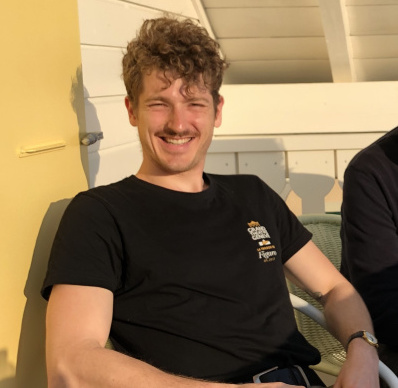

david.lucas.simon@gmail.com
üåê [davidblunier.github.io](https://davidblunier.github.io)
üìû +33 7 43 30 98 24
# Get where you want to be. Now.
## If you're here, it is because you have a goal. I can help you achieve it.
On my training journey, I have seen too many people being misled, misinformed and delusioned about their physical capabilities, sports competence, and overall well-being. I myself was in that situation for quite some time. This is mostly due to the rise of social media and internet-based online tutorials found e.g. on YouTube which contribute to a lot of noise, diluting useful and relevant information into a sea of junk advice, in which newcomers can easily drown. I can help you navigate and provide you with the tools with which your goals can be achieved.
If you are here, you are in one or more of the following situations:
1. You are skinny; you want to get bigger.
2. You are fat; you want to get leaner.
3. You are weak; you want to get stronger.
4. You are in physical pain; you want the pain to stop.
Each of these problems has a straightforward answer: you need to change something in the way you eat and in the way you move or train. I have good news for you: the solution is not hard to achieve, and your goal is whithin reach, regardless of your age, weight, total income or social class. What you need is just two things:
- *Knowledge*. You need to know what to do in order to address your specific problem.
- *Discipline*. Once you have the knowledge, you have to put it into practice in a consistant, perhaps life-lasting, way.
While these two principles might easily be conceivable, they might seem difficult to implement in your daily practice; as a consequence, you just slowly gets discouraged before forfeiting completely.
**I am here to help you to radically change the way you think about your body, movement, diet, and training practice** in order to understand that your goal - anyone's goal - is not hard to achieve once we know *what* to do, and *how to do it*. As one of the greatest philosophers of all time, Epicurus of Samos, puts it in his τετραφάρμακος (tetrapharmakos), "what is good is easy to achieve". I will help you take this dictum very literally, and show you precisely what you need to do to achieve your goals.
## What I am proposing
I propose individual training sessions adjusted to your needs, with complete follow-up, alongside complete training and nutrition plans, fully tailored to your objectives. My method is grounded in the following principle: "Keep It Simple". Concretely, what does that mean?
Your training sessions do not have to take too much of your time. They just need to be efficient. For the same reason, they need not involve too many exercises, nor too many sets per exercise; dispersion is one of the greatest risks when it comes to efficient training.
The same logic applies to food: keep it simple and focus on the macros and the calories. Results will follow.
### Case 1: You are skinny; you want to get bigger.
Arguably the most common case (and the most popular these days among young male adults). Be you an absolute beginner or an intermediate athlete already, we will together tailor a workout program that focuses on your main objective - hypertrophy. I will show you the best exercises you need to constantly perform in order to ensure stable gains, how you need to perform them, how much, and when. Intelligent programming is key: don't waste your time doing ab sessions and focus on the major muscle builders. We will also elaborate a nutrition plan that ensures you consume enough calories in order for your muscles to grow. And remember: provided you follow both of these plans, nothing is out of reach!
### Case 2: You are fat; you want to get leaner.
In the society we live in, which forces ridiculous amounts of sugar through processed foods upon us, in a world in which our lives have become increasingly sedentary and comfortable, being overweight is no longer the concern of a few people only: it has become the norm. I know for a fact how getting into shape can be hard and, to some, feel impossible; but this is not the case! I will show you how to steadily bring motion and physical effort back into your daily practice, and direct you towards the right kind of exercises you need to perform in order to loose weight and attain your ideal physical shape. On the nutrition side, I will teach you what to eat, what not to eat, in which amounts and when. No painful or restrictive diets ahead; you will be able to eat the tastiest food all the time, without giving up what you like. In my approach, nothing builds on autopunishment. You will like what you eat, how you move, and what you've become.
### Case 3: You are weak; you want to get stronger.
Our body is a gift; it is the vehicle that we ride for the rest of our lives, and we want it to go as fast, as steady, as smooth and enjoyable as possible - imagine driving a wreck for a lifetime, whereas most of us are granted the opportunity to drive a sportscar; what a pity! For that reason, we want our bodies to be mobile and strong. Not because strength is good to achieve in itself, but because strength is what makes our body fully functional in the first place. Strength allows us to inhabit our bodies smoothly, easily and effortlessly. Strenght is what keeps pain, injuries, physical and mental illnesses at bay. It is essential. I will show you how to become stronger in a very efficient way, in order to apprehend the world differently; that is, from the perspective of someone who is *in motion*.
### Case 4: You are in physical pain; you want the pain to stop.
From an evolutionary perspective, life in the XXIst century is *very wrong*. Among other things, it forces the vast majority of us to stay put in front of a computer in a seated position for 6 to 8 hours a day; but our *homo sapiens* bodies are designed to move and perform physical activities. Ignoring this and letting our muscles atrophy through lack of exercise inevitably leads to lasting pain: neck, lower back, legs, shoulders... No matter how often you go to see your favorite physiotherapist, how regularly you inject painkillers or cortisone into your body, the pain will be back and unless you properly address it, you will die with it. Together, we will learn how to face it in an effective, affordable, and natural way. I will show you what needs to be done to set your body in motion again, regardless of how old or sedentary you might be, or how busy your office schedule is. Through exercise and mobility, your body will regain the strength it was meant to have and pain will fade accordingly, forever. Let the journey begin!
## Do not hesitate, contact me and set out for change now!
## About Me
Some bio text